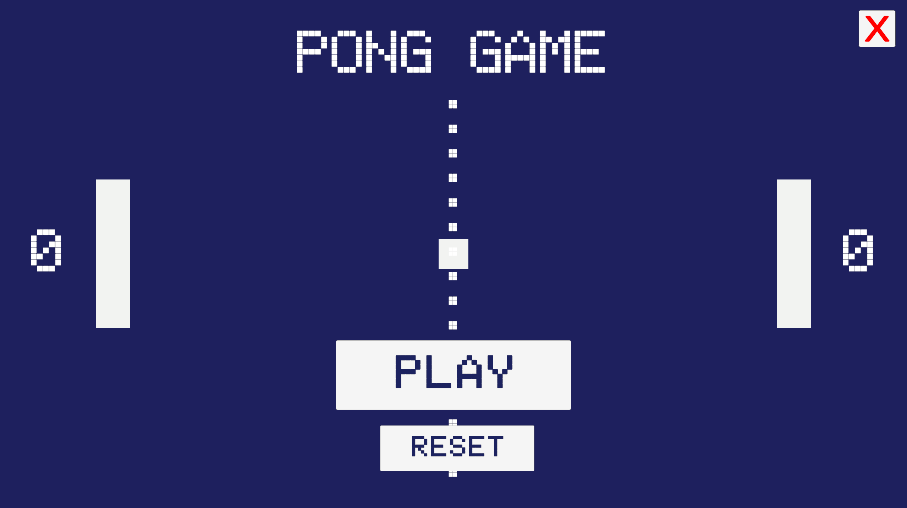
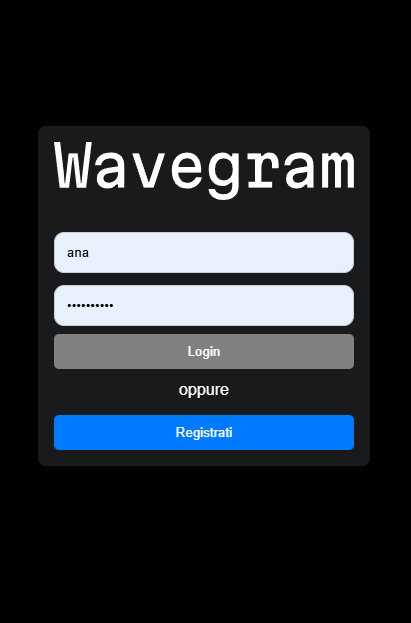
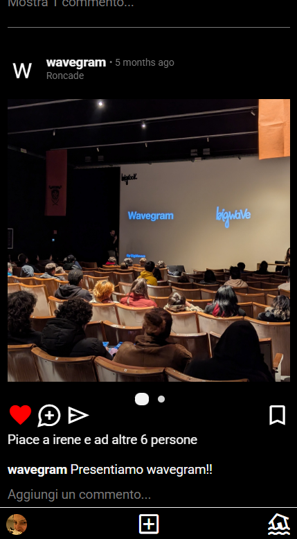
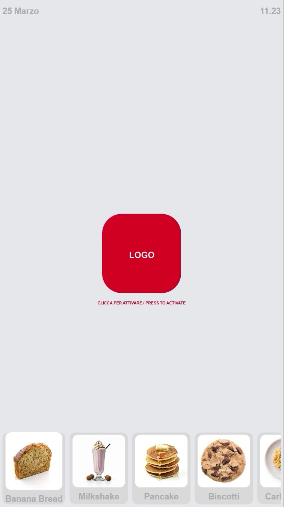
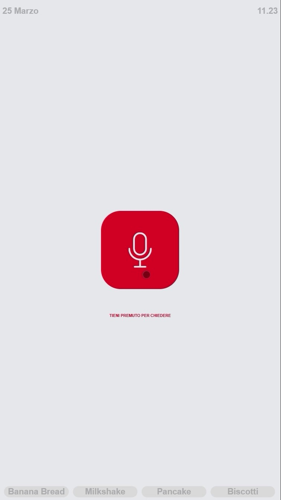
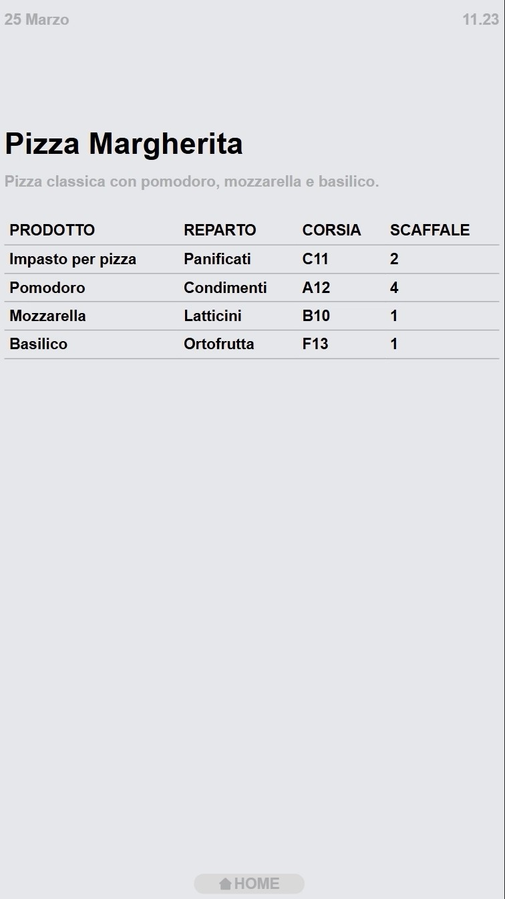
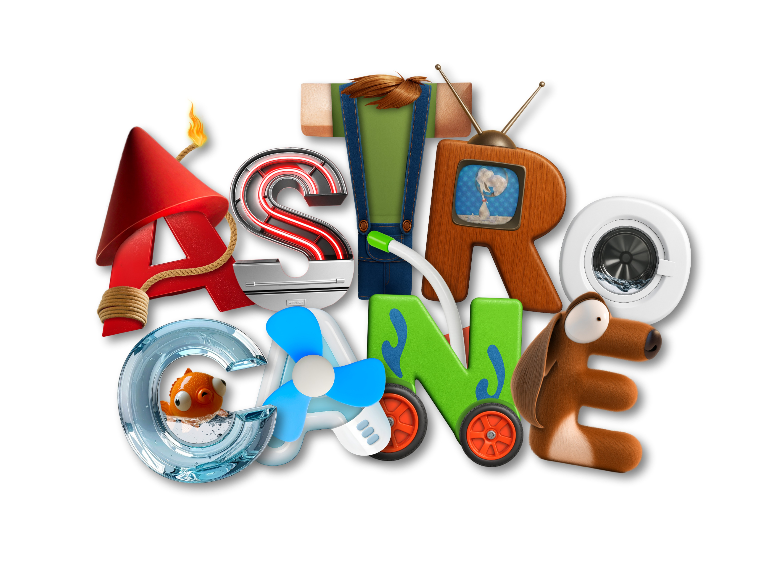
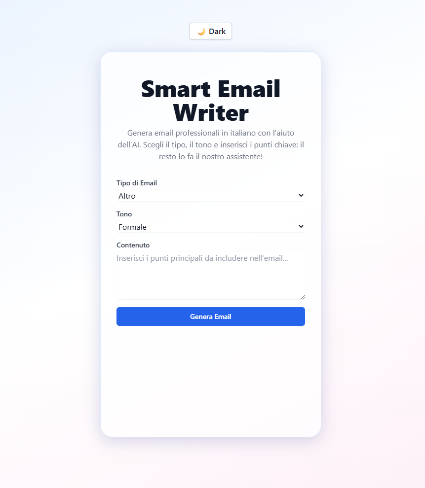
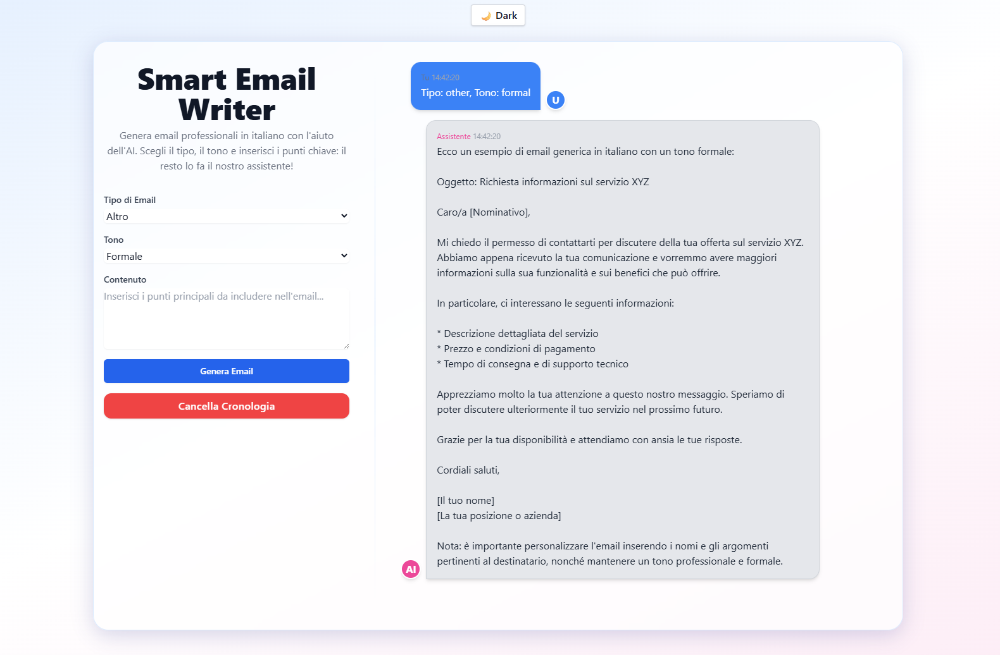
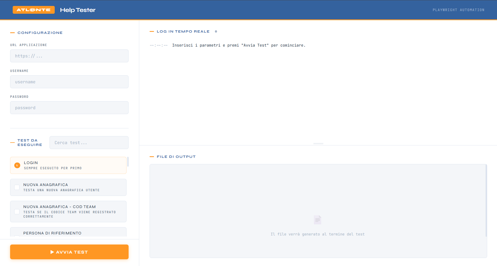

Progetti

Pong Game – Mini gioco in Unity
🛠 Tech Stack: Unity, C#
Il Progetto: Sviluppo di una rivisitazione del classico gioco arcade, progettato per apprendere le basi dello sviluppo videoludico. Il gioco include un sistema di punteggio e una logica avversaria di base.
💡 Cosa ho imparato: Gestione degli eventi in C#, fisica di base, ottimizzazione dei frame rate e gestione precisa delle collisioni 2D.
🎯 Sfida principale: Creare una curva di difficoltà equilibrata, regolando la velocità e i tempi di reazione dell'avversario per rendere il gioco competitivo ma accessibile.



Wavegram - Social App
🛠 Tech Stack: PHP, JavaScript, HTML, CSS
Il Progetto: Una piattaforma social interattiva ispirata ai moderni network, che permette agli utenti di registrarsi, effettuare il login e visualizzare un feed di contenuti.
💡 Il mio contributo: Mi sono occupata dello sviluppo completo del sistema di autenticazione sicuro (Login e Registrazione) e dell'implementazione front-end di un carosello dinamico per la navigazione dei post.



Market Assistant - AI Chatbot
🛠 Tech Stack: Python, JavaScript, HTML, CSS, AI Agents
Il Progetto: Un assistente virtuale intelligente pensato per supportare gli utenti in un ecosistema e-commerce, rispondendo a domande su prodotti e assistenza clienti.
💡 Il mio contributo: Progettazione e integrazione di Agenti AI in Python per comprendere l'intento dell'utente e recuperare in autonomia le informazioni necessarie per simulare un vero customer care.

Astrocane - Corto Animato AI
🛠 Tech Stack: ComfyUI, Generative AI Models
Il Progetto: Un progetto sperimentale di storytelling visivo: un cortometraggio animato realizzato sfruttando le più recenti tecnologie di generazione immagini e video guidata dall'IA.
💡 Il mio ruolo: Project Manager. Ho diretto il team e coordinato i flussi di lavoro tramite una board organizzativa. Operativamente, ho curato in prima persona la generazione degli asset visivi tramite complessi workflow su ComfyUI.


Smart Email Generator
🛠 Tech Stack: React, Tailwind CSS, Node.js, Express, Ollama 3
Il Progetto: Un'applicazione web full-stack in grado di redigere automaticamente email professionali partendo da brevi input dell'utente.
🎯 Sfida principale: Implementare modelli AI locali (Ollama 3) per garantire la privacy dei dati. L'obiettivo era esplorare le architetture ad agenti in JavaScript per generare risposte che rispettassero un tono aziendale adeguato.

AI Testing Agent & Dashboard
🛠 Tech Stack: C# / .NET, AI Agents Logic, Playwright/Custom Automation, n8n
Il Problema: Automatizzare il collaudo di "Atlante", un complesso gestionale sanitario, rendendo il processo accessibile anche al personale non tecnico dell'Help Desk, superando i limiti di velocità e usabilità dei framework standard.
La Soluzione: Sviluppo di un tool proprietario basato su Agenti AI e logiche di testing via codice. Ho progettato una dashboard intuitiva che permette di selezionare i componenti da testare, monitorare l'avanzamento tramite un terminale di log integrato e gestire credenziali multiple per diverse installazioni clienti.